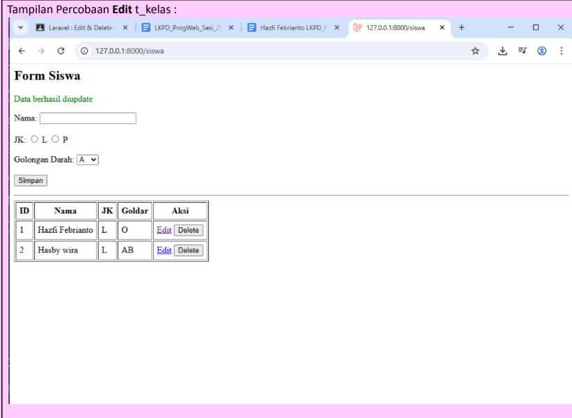
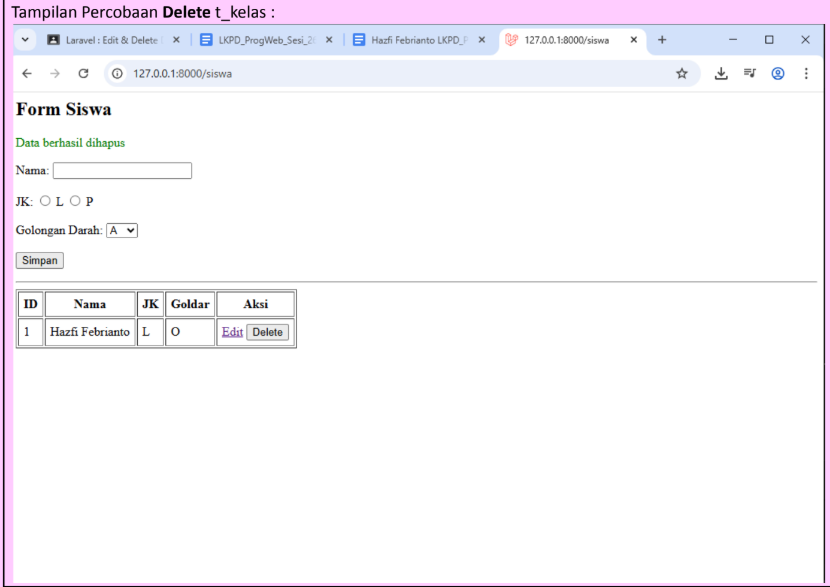

Edit dan Delete Data dengan Laravel
Pada materi ini, saya mempelajari bagaimana data yang sudah tersimpan dapat diubah kembali menggunakan fitur edit, dan bagaimana data tersebut dapat dihapus dengan fitur delete.
Studi Kasus 1
Jelaskan isi dari fungsi update() dan destroy() pada SiswaController menurut pemahaman masing-masing
Menurut pemahaman saya, fungsi update() digunakan untuk mengubah data siswa yang sudah tersimpan di database. Jadi ketika kita klik tombol edit lalu mengganti data seperti nama, jenis kelamin, atau golongan darah, fungsi ini akan menerima data baru dari form, kemudian mencari data berdasarkan id, lalu memperbarui isi datanya di tabel t_siswa. Setelah itu, halaman akan kembali ke daftar siswa dengan pesan bahwa data berhasil diupdate.
Sedangkan fungsi destroy() digunakan untuk menghapus data siswa. Saat tombol delete ditekan, sistem akan mengambil id siswa tersebut lalu menghapus datanya dari database. Setelah dihapus, halaman kembali lagi ke daftar siswa dan menampilkan pesan bahwa data berhasil dihapus.
Studi Kasus 2
Implementasikan Edit dan Delete pada data siswa
Pada studi kasus kedua, saya mengimplementasikan fitur edit dan delete pada data siswa. Walaupun pada beberapa catatan tertulis t_kelas, kode yang saya kerjakan pada materi ini menggunakan tabel t_siswa di dalam SiswaController dan view siswa.form.
Source code Edit() dan Update() di Controller
<?php
namespace App\Http\Controllers;
use Illuminate\Http\Request;
use Illuminate\Support\Facades\DB;
class SiswaController extends Controller
{
// TAMPIL + LIST DATA
function index()
{
$siswa = DB::table('t_siswa')->get();
return view('siswa.form', compact('siswa'));
}
// SIMPAN
function store(Request $request)
{
DB::table('t_siswa')->insert([
'nama' => $request->nama,
'jk' => $request->jk,
'golongan_darah' => $request->golongan_darah
]);
return redirect('/siswa')->with('success', 'Data berhasil ditambahkan');
}
// EDIT
function edit($id)
{
$edit = DB::table('t_siswa')->find($id);
$siswa = DB::table('t_siswa')->get();
return view('siswa.form', compact('edit', 'siswa'));
}
// UPDATE
function update(Request $request, $id)
{
DB::table('t_siswa')->where('id', $id)->update([
'nama' => $request->nama,
'jk' => $request->jk,
'golongan_darah' => $request->golongan_darah
]);
return redirect('/siswa')->with('success', 'Data berhasil diupdate');
}
}Source code Form Edit di Views
<h2>Form Siswa</h2>
@if(session('success'))
<p style="color:green">{{ session('success') }}</p>
@endif
<form method="POST" action="{{ isset($edit) ? '/siswa/'.$edit->id : '/siswa/store' }}">
@csrf
@if(isset($edit))
@method('PATCH')
@endif
Nama:
<input type="text" name="nama" value="{{ old('nama', $edit->nama ?? '') }}">
<br><br>
JK:
<input type="radio" name="jk" value="L" {{ old('jk', $edit->jk ?? '') == 'L' ? 'checked' : '' }}> L
<input type="radio" name="jk" value="P" {{ old('jk', $edit->jk ?? '') == 'P' ? 'checked' : '' }}> P
<br><br>
Golongan Darah:
<select name="golongan_darah">
<option value="A" {{ old('golongan_darah', $edit->golongan_darah ?? '') == 'A' ? 'selected' : '' }}>A</option>
<option value="B" {{ old('golongan_darah', $edit->golongan_darah ?? '') == 'B' ? 'selected' : '' }}>B</option>
<option value="AB" {{ old('golongan_darah', $edit->golongan_darah ?? '') == 'AB' ? 'selected' : '' }}>AB</option>
<option value="O" {{ old('golongan_darah', $edit->golongan_darah ?? '') == 'O' ? 'selected' : '' }}>O</option>
</select>
<br><br>
<button type="submit">Simpan</button>
</form>
<hr>
<table border="1" cellpadding="6">
<tr>
<th>ID</th>
<th>Nama</th>
<th>JK</th>
<th>Goldar</th>
<th>Aksi</th>
</tr>
@foreach($siswa as $s)
<tr>
<td>{{ $s->id }}</td>
<td>{{ $s->nama }}</td>
<td>{{ $s->jk }}</td>
<td>{{ $s->golongan_darah }}</td>
<td>
<a href="/siswa/edit/{{ $s->id }}">Edit</a>
</td>
</tr>
@endforeach
</table>
Source code Destroy() di Controller dan Button Delete di Views
// DESTROY DI CONTROLLER
function destroy($id)
{
DB::table('t_siswa')->where('id', $id)->delete();
return redirect('/siswa')->with('success', 'Data berhasil dihapus');
}
// AKSI EDIT DAN DELETE DI VIEW
<td>
<a href="/siswa/edit/{{ $s->id }}">Edit</a>
<form action="/siswa/{{ $s->id }}" method="POST" style="display:inline">
@csrf
@method('DELETE')
<button type="submit">Delete</button>
</form>
</td>
Dari studi kasus ini, saya memahami bahwa fitur edit dan delete merupakan bagian penting dalam CRUD karena data yang sudah tersimpan dapat diperbarui maupun dihapus sesuai kebutuhan.